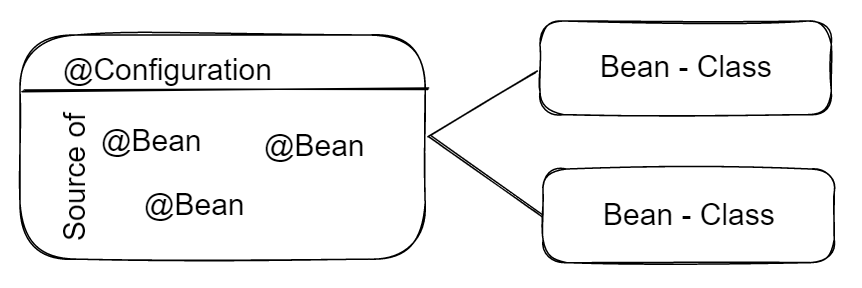

Spring
Spring es un framework de código abierto para el desarrollo de aplicaciones Java. Su objetivo principal es facilitar la creación de aplicaciones robustas, flexibles y mantenibles mediante el uso de principios como la Inversión de Control (IoC) y la Programación Orientada a Aspectos (AOP).
Filosofía de Spring
-
Inversión de Control (IoC): El framework se encarga de gestionar las dependencias entre los componentes de la aplicación.
-
Programación Orientada a Aspectos (AOP): Permite separar preocupaciones transversales, como la seguridad o el manejo de logs, del núcleo de la lógica de la aplicación.
Un framework es un conjunto de componentes que proporciona abstracciones e implementaciones, ya hechas, de las tareas básicas que todo el sistema de información realiza.
Componentes principales:
- Spring Core: El núcleo del framework, encargado de la inyección de dependencias.
- Spring MVC: Permite el desarrollo de aplicaciones web utilizando el patrón Modelo-Vista-Controlador.
- Spring Boot: Facilita la creación de aplicaciones basadas en Spring con una configuración mínima.
- Spring Data: Simplifica el acceso a datos con soporte para JPA, MongoDB, Redis, entre otros.
- Spring Security: Proporciona herramientas para implementar seguridad en aplicaciones.
- Spring Cloud: Ayuda en la construcción de aplicaciones distribuidas y microservicios.
Requisitos previos
- JDK: Asegúrate de tener Java Development Kit instalado.
- Maven o Gradle: Para gestionar dependencias.
- IDE: IntelliJ IDEA, Eclipse u otro entorno de desarrollo.
Spring Core
Es el núcleo del framework, encargado de la inyección de dependencias (DI).
Inyección de Dependencias (DI)
La Inyección de Dependencias es un patrón fundamental en Spring que permite a las clases declarar las dependencias que necesitan, dejando que el contenedor de Spring las proporcione automáticamente. Esto se logra mediante el uso de anotaciones o configuración explícita.
Tipos de inyección de dependencias: Constructor, Setter o Campo.
Inyección por constructor (recomendada):
Se realiza pasando las dependencias necesarias como parámetros al constructor de la clase.
import org.springframework.stereotype.Service
@Service
class MiServicio(private val repositorio: MiRepositorio){
fun realizarAccion() {
println("Usando el repositorio: $miRepositorio")
}
}
-
Spring detecta el constructor y resuelve automáticamente las dependencias necesarias.
-
En Kotlin, el modificador private en el constructor asegura que la dependencia no se exponga como una propiedad pública.
Inyección por setter:
Se realiza proporcionando métodos setter para establecer las dependencias después de crear el objeto.
import org.springframework.beans.factory.annotation.Autowired
import org.springframework.stereotype.Service
@Service
class MiServicio {
private lateinit var miRepositorio: MiRepositorio
fun setMiRepositorio(miRepositorio: MiRepositorio) {
this.miRepositorio = miRepositorio
}
fun realizarAccion() {
println("Usando el repositorio: $miRepositorio")
}
}
Spring llama al método setMiRepositorio y pasa la dependencia configurada.
Inyección directa en campos:
Se realiza directamente en las propiedades de la clase, usando anotaciones como @Autowired o inyectándolas mediante el constructor en Kotlin.
import org.springframework.stereotype.Service
class MiServicio {
@Autowired
private lateinit var miRepositorio: MiRepositorio
fun realizarAccion() {
println("Usando el repositorio: $miRepositorio")
}
}
Spring inyecta directamente la dependencia en el campo marcado con @Autowired.
Contenedor Spring
En Spring, los conceptos IoC y DI se implementan a través del contenedor Spring, que crea y gestiona los objetos de la aplicación, que se conocen como beans. Los beans y sus dependencias se configuran en archivos de configuración de Spring o mediante anotaciones en el código.
Beans
En el contexto de Spring, un Bean es un objeto que es gestionado por el contenedor de Spring. Estos beans son los componentes esenciales de una aplicación Spring y su ciclo de vida es manejado por el framework, permitiendo una inyección de dependencias eficiente y una configuración centralizada, y que puede utilizarse para proporcionar servicios o funcionalidades a otras partes de la aplicación.

Hay varias formas de definir beans en Spring Boot, y la más común es a través de anotaciones.
Anotaciones
Las anotaciones son herramientas utilizadas para indicar a Spring cómo manejar un Bean o cómo configurar ciertos aspectos de la aplicación. Por ejemplo, @Bean le dice a Spring que cree y gestione un Bean, mientras que @Component marca una clase para ser detectada automáticamente como Bean.
@Configuration: Define una clase de configuración.
@Bean: Declara un Bean manualmente.
Alternativamente, los Beans pueden configurarse mediante un archivo XML (menos común hoy en día).
Ejemplos de configuración con anotaciones:
Definir un Bean con @Component
import org.springframework.stereotype.Component;
@Component
public class MiComponente {
public String saludar() {
return "Hola desde MiComponente";
}
}
Crear un servicio con @Service
import org.springframework.stereotype.Service;
@Service
public class MiServicio {
public String obtenerMensaje() {
return "Mensaje desde MiServicio";
}
}
Configurar un Bean manualmente con @Bean
import org.springframework.context.annotation.Bean;
import org.springframework.context.annotation.Configuration;
@Configuration
public class MiConfiguracion {
@Bean
public MiComponente miComponente() {
return new MiComponente();
}
}